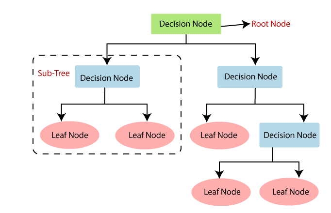
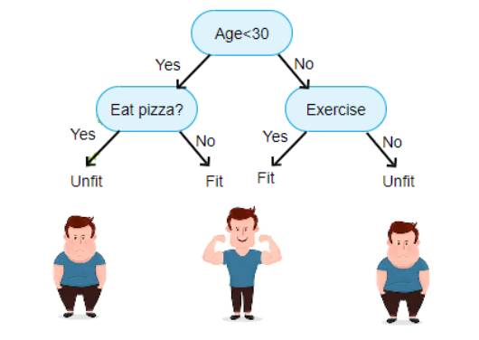
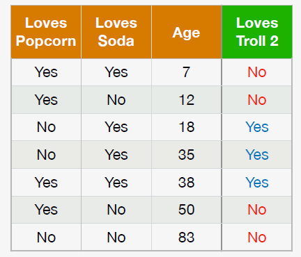
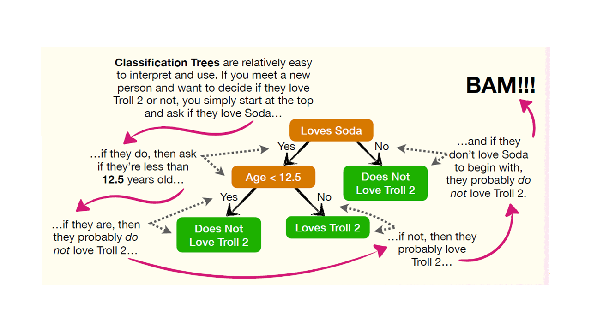

Árboles de decisión¶
Los árboles de decisión (Decision Trees) son un método de Machine Learning para clasificación y regresión. Estos algoritmos son capaces de ajustar conjuntos de datos complejos.
Una de las muchas cualidades de los árboles de decisión es que requieren muy poca preparación de datos. De hecho, no requieren escalado o centrado de características en absoluto.
Los árboles de decisión para clasificación realizan la clasificación en dos o más variables discretas.
La metodología de los árboles de clasificación se basa en dividir el espacio de las variables de entrada con el objetivo de separarlo por regiones de elementos que pertenecen a una clase particular. Este método es recursivo porque inicia partiendo el el espacio en dos regiones y luego crea varias subregiones sobre las ya creadas.
El árbol crece a medida que realiza más particiones, esto se llama
profundidad. Se puede limitar la profundidad del árbol con
early stoping o se puede limitar la cantidad mínima de observaciones
que puede contener cada región con pre-pruning.
Los árboles de decisión crean límites de decisión ortogonales (todas las divisiones son perpendiculares a un eje), lo que los hace sensibles a la rotación del conjunto de entrenamiento.
La forma en que trabaja este método es por medio de un conjunto de reglas de decisión que se pueden escribir en forma de diagrama de flujo. El árbol se dibuja al revés, en la parte superior está la raíz y en los niveles más bajos, las hojas. El árbol está lleno de declaraciones condicionales, en función de estos condicionales el flujo de control se dirige hacia los nodos hoja, los cuales están al final y denotan la clase objetivo que finalmente predice.

DecisionTree¶

DecisionTree-Ejemplo¶

DecisionTree-Ejemplo2¶

DecisionTree-Ejemplo2.2¶
Se denomina que un nodo es “puro” si todas las observaciones que clasificó en ese nodo pertenecen a la misma clase. Un método para medir el nivel de impureza de cada nodo se llama Impureza de Gini (Gini Impurity), pero también existen otros como Entropía (Entropy) y Ganancia de Información (Information Gain).
Impureza de Gini:¶
En clasificación mide la probabilidad de que un elemento escogido aleatoriamente le sea asignado una clase incorrecta. Con esto se busca minimizar la probabilidad de asignación a una clase errónea.
El atributo Gini de un nodo mide su impureza: un nodo es “puro” \((gini=0)\) si todos los elementos que aplica pertenecen a la misma clase.
La impureza de Gini se mide como:
Donde \(p_{i,k}\) es la proporción de elementos de la clase k entre los elementos en el nodo i.
Los nodos que podrían reducir el índice Gini son los que se podría particionar.
Entropía:¶
Mide la cantidad de aleatoriedad o incertidumbre en los datos. La entropía de un conjunto de datos depende de cuánta aleatoriedad esté presente en el nodo. En este enfoque, nuestro objetivo es encontrar un criterio de división que pueda ayudarnos a reducir la entropía después de la división, lo que nos lleva a nodos más puros.}
Si una muestra es completamente homogénea o pertenece a la misma clase, la entropía es completamente cero, y si una muestra se divide por igual entre todas las clases, tiene una entropía de 1.
En un árbol de decisión, queremos crear los nodos hoja de los que estamos seguros acerca de la etiqueta de clase; por lo tanto, necesitamos minimizar la aleatoriedad y maximizar la reducción de entropía después de la división. El atributo que seleccionemos debería conducir a la mejor reducción posible de entropía. Esto es capturado llamada ganancia de información, que mide cuánta medida nos da una característica sobre la clase. Por lo tanto, queremos seleccionar el atributo que conduce a la mayor ganancia de información posible. Para los atributos de datos que contienen datos continuos, podemos usar los criterios del índice de Gini.
El concepto de entropía se originó en la termodinámica como una medida del desorden molecular: la entropía se aproxima a cero cuando las moléculas están quietas y bien ordenadas. Posteriormente, la entropía se extendió a una amplia variedad de dominios, incluida la teoría de la información de Shannon, donde mide el contenido de información promedio de un mensaje: la entropía es cero cuando todos los mensajes son idénticos. En Machine Learning, la entropía se usa con frecuencia como una medida de impureza: la entropía de un conjunto es cero cuando contiene elementos de una sola clase.
La entropía se mide como:
Árboles de clasificación en Python:¶
Se usará scikit-learn en Python. La librería tiene unos
hiperparámetros por defecto.
Algunos hiperparámetros son:
Medida de calidad del clasificados: Por defecto
criterion = "gini", pero se puede cambiar aentropy.Estrategia para la división en cada nodo: Por defecto
splitter = "best"que elige la mejor división o se puede cambiar por"random"para elegir la mejor división aleatoria.Profundidad del árbol: Por defecto ninguna,
max_depth = None, se cambia con un valor entero. ConNonelos nodos se expanden hasta que todas las hojas sean puras o hasta que todas las hojas contengan menos demin_samples_split.Número mínimo de muestras requeridas para dividir un nodo interno: Por defecto
min_samples_split = 2, por defecto es 2.Número mínimo de muestras requeridas para estar en un nodo hoja: Por defecto
min_samples_leaf = 1. Un punto de división a cualquier profundidad solo se considerará si deja al menosmin_samples_leafmuestras de entrenamiento en cada una de las ramas izquierda y derecha. Esto puede tener el efecto de suavizar el modelo, especialmente en regresión.Fracción ponderada mínima de la suma total de pesos: Este requerido para estar en un nodo hoja. Por defecto
min_weight_fraction_leaf = 0.0, se puede cambiar por un valorfloat.Número máximo de características para dividir cada nodo: Por defecto es
max_features = Noneque equivalemax_features=n_features.Cantidad de nodos hoja: Por defecto
max_leaf_nodes = Noneindicando un número ilimitado de nodos hoja. El árbol crece hasta un número limitado de nodos hoja si se especifica algún valor entero. Los mejores nodos se definen como una reducción relativa de la impureza.
Optimización de hiperparámetros:¶
Los árboles de decisión hacen muy pocas suposiciones sobre los datos (a diferencia de los modelos lineales, que asumen que los datos son lineales, por ejemplo). Si no se restringe, la estructura de árbol se adaptará a los datos de entrenamiento, ajustándolos muy de cerca; de hecho, lo más probable es que lo sobreajuste. Este modelo a menudo se denomina modelo no paramétrico, no porque no tenga ningún parámetro (tiene muchos), sino porque la cantidad de parámetros no se determina antes del entrenamiento, por lo que la estructura del modelo es libre de apegarse a los datos.
Para evitar sobreajustar los datos de entrenamiento, debe restringir la libertad del árbol de decisiones durante el entrenamiento. Esto se llama regularización. Los hiperparámetros de regularización dependen del algoritmo utilizado, pero generalmente puede al menos restringir la profundidad máxima del árbol de decisión.
En Scikit-Learn, esto está controlado por el hiperparámetro
max_depth (el valor predeterminado es None, lo que significa
ilimitado). Reducir max_depth regularizará el modelo y, por lo
tanto, reducirá el riesgo de sobreajuste.
La clase DecisionTreeClassifier tiene algunos otros parámetros que
restringen de manera similar la forma del árbol de decisión:
min_samples_split (la cantidad mínima de muestras que debe tener un
nodo antes de que pueda dividirse), min_samples_leaf (la cantidad
mínima de muestras que debe tener un nodo hoja),
min_weight_fraction_leaf (igual que min_samples_leaf pero
expresado como una fracción del número total de elementos ponderados),
max_leaf_nodes (el número máximo de nodos hoja) y max_features
(el número máximo de características que se evalúan para dividir en cada
nodo).
Aumentar los hiperparámetros min_* o reducir los hiperparámetros
max_* regularizará el modelo.
Código:¶
En Python se debe importar el módulo DecisionTreeClassifier:
from sklearn.tree import DecisionTreeClassifier
Luego se crea un objeto clasificador con la función
DecisionTreeClassifier(), el cual lo llamaremos clf así:
clf = DecisionTreeClassifier()
El ajuste del modelo se hace con la función .fit() así:
clf.fit(X,y)
Por último, se realiza la predicción con el modelo ajustado usando la
función .predict(), los valores predichos los llamaremos y_pred:
y_pred = clf.predict(X)
Evaluación del desempeño:¶
Importaremos el módulo accuracy_score así:
from sklearn.metrics import accuracy_score
El accuracy es una comparación entre los valores reales y los predichos. Se realiza de la siguiente manera:
accuracy_score(y, y_pred)
Resumen del código:
from sklearn.tree import DecisionTreeClassifier
from sklearn.metrics import accuracy_score
clf = DecisionTreeClassifier()
clf.fit(X,y)
y_pred = clf.predict(X)
accuracy_score(y, y_pred)